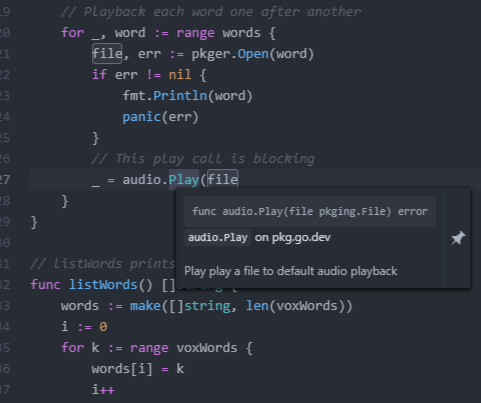

Introduction

Go was designed to make software development simpler while still providing excellent performance. Its clean syntax and built-in tools allow developers to build reliable applications without the complexity found in many other programming languages.
Simple Syntax
One of Go's biggest advantages is its easy-to-read syntax. The language intentionally includes fewer keywords and language features than many traditional programming languages. This makes Go easier to learn and encourages developers to write clean, maintainable code.
Fast Compilation
Go is a compiled programming language, meaning source code is translated into machine code before execution. Its compiler is known for extremely fast build times, allowing developers to test and deploy applications more quickly during development.
Built-in Concurrency
One of Go's most unique features is its support for concurrency through goroutines and channels. Goroutines allow multiple tasks to run simultaneously while using very little memory. Channels provide a safe way for these tasks to communicate, making it easier to build scalable web servers and cloud applications.
Garbage Collection
Go automatically manages memory using garbage collection. Instead of manually allocating and freeing memory, the language removes unused objects automatically. This helps reduce programming errors and allows developers to focus on building features rather than managing memory.
Rich Standard Library
Go includes an extensive standard library with packages for networking, file handling, JSON processing, cryptography, testing, and web servers. Because many common tools are already included, developers often need fewer third-party libraries to build complete applications.
Why Developers Enjoy Go
- Easy to learn and read
- Fast compilation and execution
- Excellent support for concurrent programming
- Strong standard library
- Cross-platform support
- Large and active open-source community